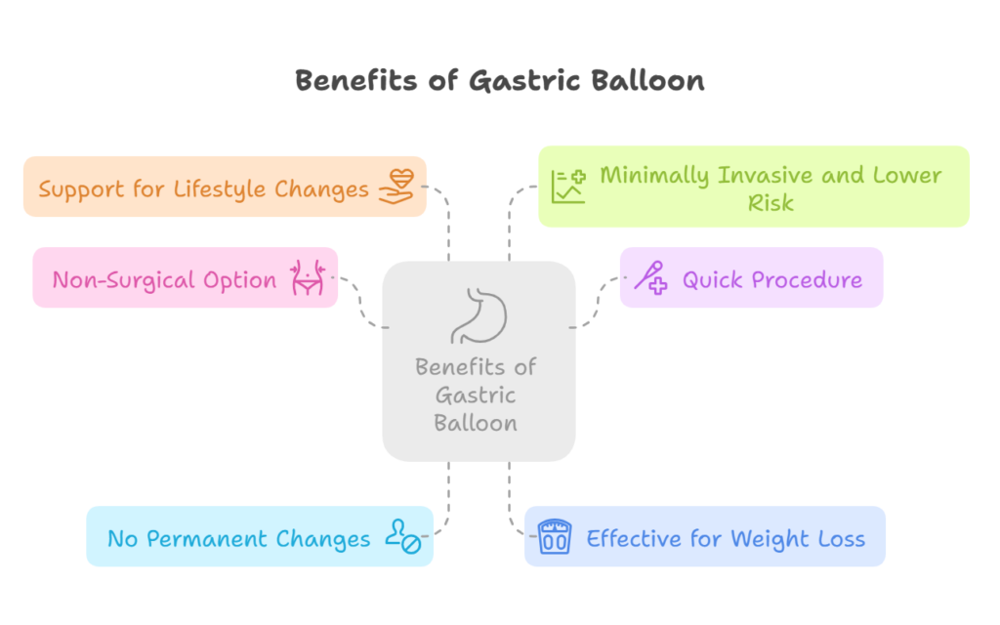

Weight loss is an ongoing challenge for many individuals, with various options available to help reduce excess weight. One such option that has recently gained popularity is the gastric balloon. This non-surgical procedure is designed to help people lose weight by reducing the amount of food their stomach can hold, thus making them feel fuller and faster.
But does the gastric balloon work? Is it a safe and effective solution for weight loss? If you are considering Gastric Balloon Surgery in Delhi, it is essential to understand how the procedure works, its benefits and risks, and whether it’s the right option for you.
In this blog, we will explore these aspects in detail and how Dr. Atul Peters, a renowned bariatric surgeon in Delhi, can guide you in making an informed decision about gastric balloon surgery.

What is a Gastric Balloon?
A gastric balloon is a temporary, non-surgical weight-loss solution that involves placing a soft, silicone balloon inside the stomach. The balloon is inflated with sterile saline to take up space in the stomach, reducing its capacity. As a result, patients feel full after eating smaller amounts of food, leading to reduced caloric intake and weight loss.
The procedure is minimally invasive and performed under mild sedation, usually taking about 20 to 30 minutes. The balloon stays in the stomach for six months, after which it is removed.
How Does the Gastric Balloon Work?
The gastric balloon works by physically occupying space in the stomach, thereby limiting how much food it can hold. This gives a sense of fullness after eating much smaller portions than usual. By reducing the stomach’s capacity, the balloon helps control hunger and encourages patients to adopt healthier eating habits.
The balloon doesn’t permanently alter the stomach’s structure like traditional weight-loss surgery. Instead, it acts as a tool to support weight loss through lifestyle changes. Most patients experience weight loss within the first few months of the balloon being in place, with continued progress as they follow dietary and exercise recommendations.
Benefits of Gastric Balloon

- Non-Surgical Option: Unlike traditional weight-loss surgeries like gastric bypass or sleeve gastrectomy, the gastric balloon does not require incisions or permanent changes to the stomach. This makes it a safer and less invasive option for people who do not wish to undergo surgery but still want to lose weight.
- Quick Procedure: The gastric balloon procedure typically takes only 20 to 30 minutes and can be done on an outpatient basis, meaning you can go home the same day. Recovery time is also minimal, with most people resuming normal activities within a couple of days.
- No Permanent Changes: The gastric balloon is temporary, meaning that after six months or one year, it is removed. This means that patients do not have to worry about permanent alterations to their digestive system, which is often a concern with traditional weight-loss surgeries.
- Effective for Weight Loss: Studies have shown that patients who undergo gastric balloon surgery can lose only between 5 to 20 Kg of their excess weight within six months or 1 year with the help of balloon and lifestyle changes. Most patients see noticeable improvements in their weight and overall health.
- Support for Lifestyle Changes: The gastric balloon is not a “quick fix.” It encourages lifestyle changes, including improved diet and regular physical activity. With the help of a healthcare team, patients are provided with a personalized weight-loss plan that promotes long-term success after the balloon is removed.
- Minimally Invasive and Lower Risk: Compared to traditional weight-loss surgeries, gastric balloon surgery is less invasive and has a lower risk of complications. Since no incisions are made, the risk of infection and scarring is much lower. It’s also suitable for individuals who are not candidates for more invasive surgical weight-loss options.
Is Gastric Balloon Surgery Right for You?
The gastric balloon is not for everyone. It is typically recommended for people who are moderately overweight and have tried other weight-loss methods without success. This procedure can also be done for patients as a primary procedure in whom bariatric surgery cannot be done due to the risk of complications. Once a patient loses 5 to 20 Kg with the help of a balloon then can be taken for bariatric surgery. Candidates for gastric balloon surgery typically meet the following criteria:
- BMI Between 30 and 40: The gastric balloon is most effective for people with a BMI (Body Mass Index) between 30 and 40. Individuals with a higher BMI may require more intensive weight-loss interventions like bariatric surgery.
- Unsuccessful with Diet and Exercise: If you have struggled to lose weight through diet and exercise alone, the gastric balloon may be a helpful option to kickstart your weight-loss journey.
- No Serious Health Conditions: Individuals with certain medical conditions such as uncontrolled heart disease, liver disease, or gastrointestinal disorders may not be suitable candidates for the gastric balloon. It’s essential to discuss your medical history with your healthcare provider before deciding on the procedure.
What to Expect During and After the Procedure
- Before the Procedure: Before the gastric balloon procedure, you will undergo a thorough evaluation by a healthcare professional, such as Dr. Atul Peters, who specializes in bariatric treatments. This evaluation includes a complete medical history, blood tests, and imaging studies to ensure that you are a suitable candidate for the procedure.
- During the Procedure: The procedure itself is quick and minimally invasive. You will be given mild sedation to keep you comfortable. Dr. Atul Peters or another experienced doctor will insert the deflated balloon through the mouth and into the stomach using an endoscope (a thin, flexible tube with a camera). Once the balloon is in place, it will be inflated with sterile saline to take up space in the stomach.
- After the Procedure: Most patients can go home the same day after the procedure. You may experience some mild discomfort, nausea, or bloating in the first few days after the procedure. These symptoms are temporary and usually resolve within a week.
Potential Risks and Side Effects
Like any medical procedure, gastric balloon surgery does come with some risks. While the procedure is generally considered safe, there are some potential side effects and complications to be aware of:
- Nausea and Vomiting: Some patients may experience nausea or vomiting shortly after the balloon is placed in the stomach. These symptoms usually go away after a few days.
- Abdominal Pain or Discomfort: It is common to experience some bloating or abdominal discomfort after the procedure.
- Balloon Deflation: In rare cases, the balloon may deflate on its own prematurely, causing discomfort and requiring removal.
- Gastrointestinal Issues: Some patients may experience acid reflux, indigestion, or other gastrointestinal issues while the balloon is in place.
Conclusion
The gastric balloon is an effective weight-loss option for individuals who have struggled with obesity or excess weight and want a less invasive solution compared to traditional bariatric surgeries. While it is not a permanent fix, it can help you lose significant weight and jump-start your journey toward a healthier lifestyle. If you are considering Gastric Balloon Surgery in Delhi, Dr. Atul Peters is a highly qualified bariatric surgeon who can guide you through the entire process, ensuring that you are well informed and ready for the procedure. With the right approach and a commitment to healthy habits, the gastric balloon can be an excellent tool for long-term weight loss success.
Recommended Further Reading
Have Personal Health Questions?
Consult with Dr. Atul Peters and our expert multidisciplinary team at Max Smart Super Speciality Hospital, Saket, New Delhi.
Book Your Consultation